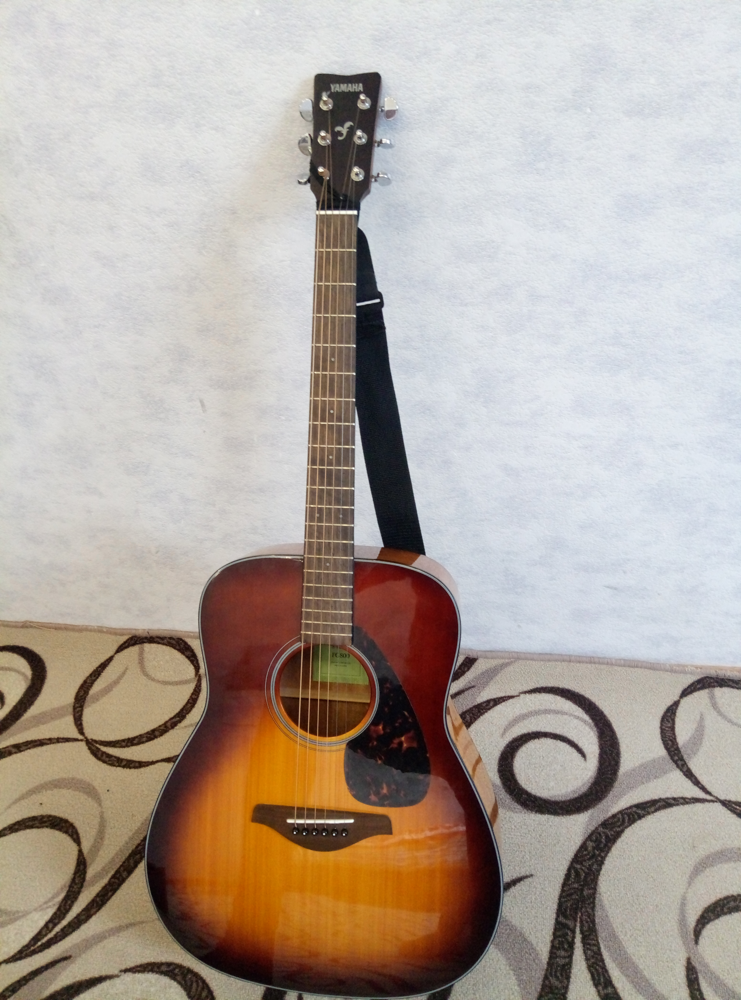
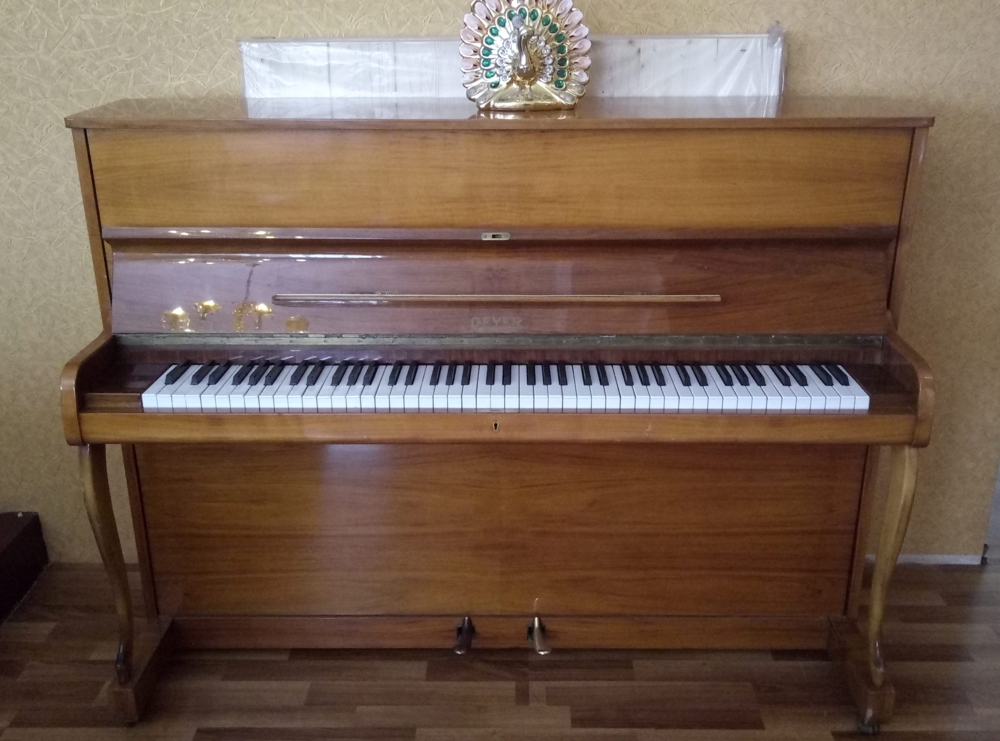
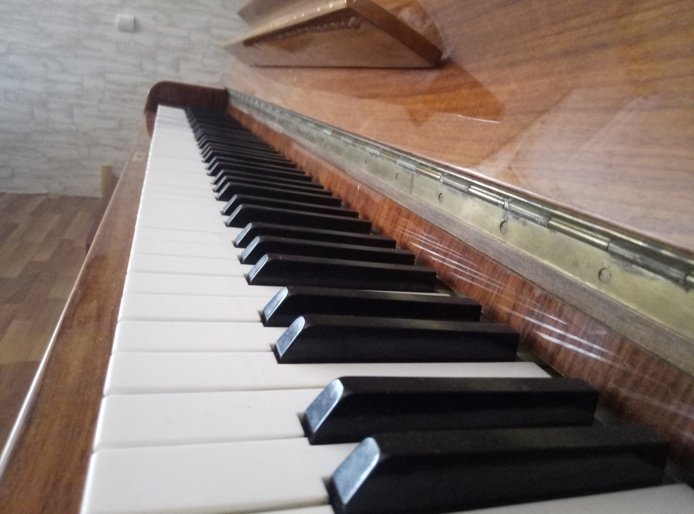
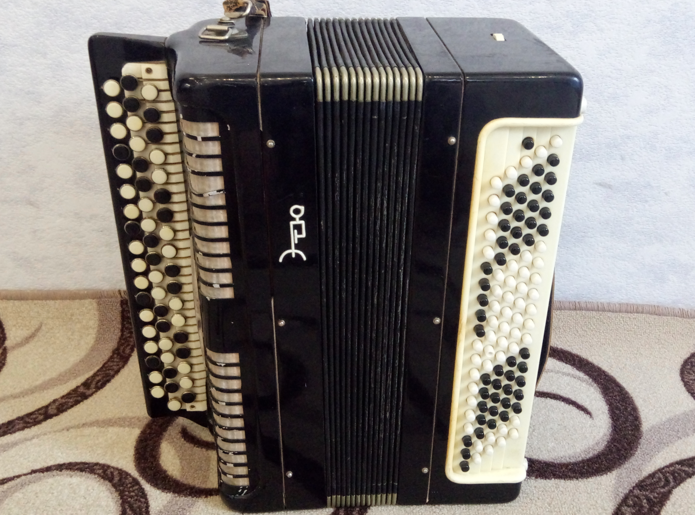
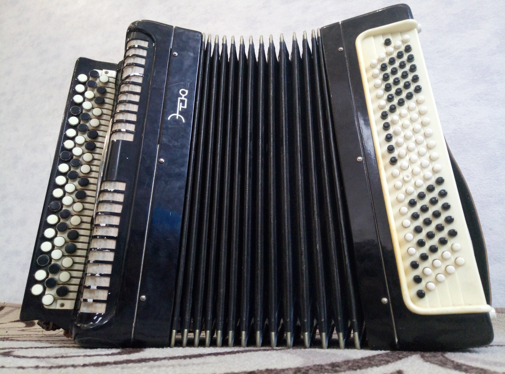
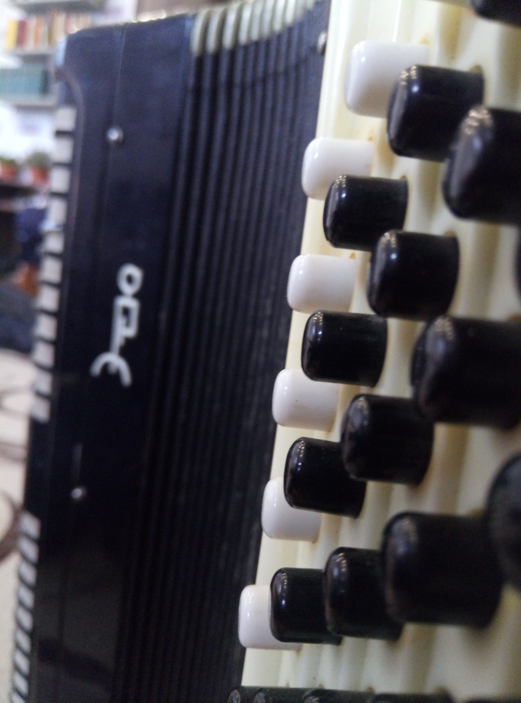

Музыка - моё увлечение!
Я с раннего детства погружен в музыку. Многие мои родственники по маминой линии - от природы певцы. Поэтому неудивительно, что пою и я. Но это не единственное - я увлекаюсь игрой на музыкальных инструментах. Но обо всём по порядку.
Я и песня
Я люблю и петь и слушать музыку. Сразу оговорюсь, что мне нравится традиционная христианская музыка. В число моих любимых песен входят такие, как "Бог мой, храни меня" M. Ramvsey, "В небе херувимы" Ионафана, "Единому Богу слава" и другие. Эти и многие другие песни я люблю, как слушать, так и петь. И это одна из причин, по которым я пою в нашем церковном хору. В этой же Церкви я пою сольно, дуэтом и тп.
Музыкальные инструменты в моей жизни
Мой путь знакомства с музыкальными инструментами начался с музыкальной школы в 2015 году. В это время я учился игре на скрипке. Но для меня это время оставило огромный негативный осадок, поэтому я в первый же год закончил обучение в музыкальной школе и на несколько лет предал забвению мысль об освоении какого-либо музыкального инструмента.
Так продолжалось до 2018 года. В это время я наблюдал, как учился играть на гитаре мой старший брат. В то же время мой папа призывал всех нас, его детей, учиться играть на музыкальных инструментах. На этой почве я захотел научиться играть на гитаре. Игру на данном музыкальном инструменте освоил за небольшое время - около месяца. И тогда я понял, что это моё!
С того момента, как я начал учиться играть на гитаре, прошло 1,5 года. Я захотел научиться играть на других музыкальных инструментах. И вот я уже учусь играть на фортепиано и баяне.
Bот некоторые фото по теме:
Это моя гитара
Это ещё гитара
Это моё пианино
А это фортепиано)
Это баян
Он же, только раскрытый
Баян с другого ракурса
А как вы относитесь к музыке? Пишите свой ответ в комментариях.